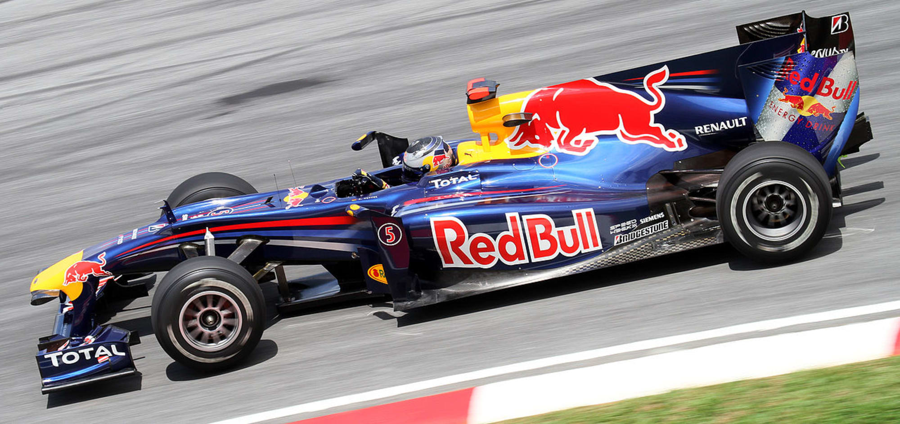

Red Bull RB6 adalah mobil balap Formula Satu yang dirancang oleh Red Bull Racing untuk kejuaraan musim 2010 dan diluncurkan pada 10 Februari di Jerez
Mobil tersebut merengkuh Juara Dunia Konstruktor pertama dari empat Kejuaraan Konstruktor Dunia berturut-turut yang diraih oleh Red Bull Racing dan di tangan Sebastian Vettel meraih Kejuaraan Dunia Pembalap pertama dalam karirnya di putaran terakhir musim tersebut
Pada tahun 2014 sebelum melaksanakan balapan terakhirnya dengan tim Red Bull Vettel menyatakan bahwa RB6 merupakan mobil Formula Satu favoritnya yang dikendarai dalam karirnya hingga saat ini